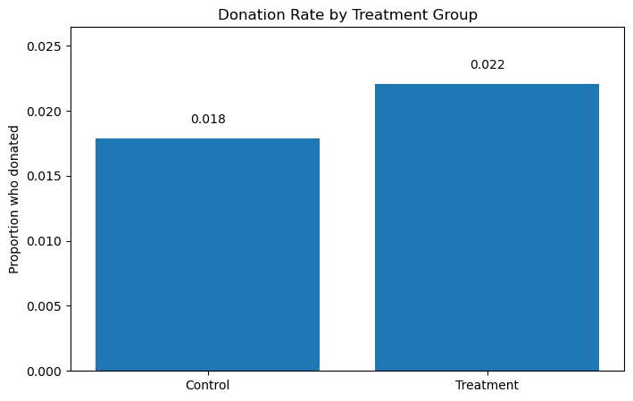
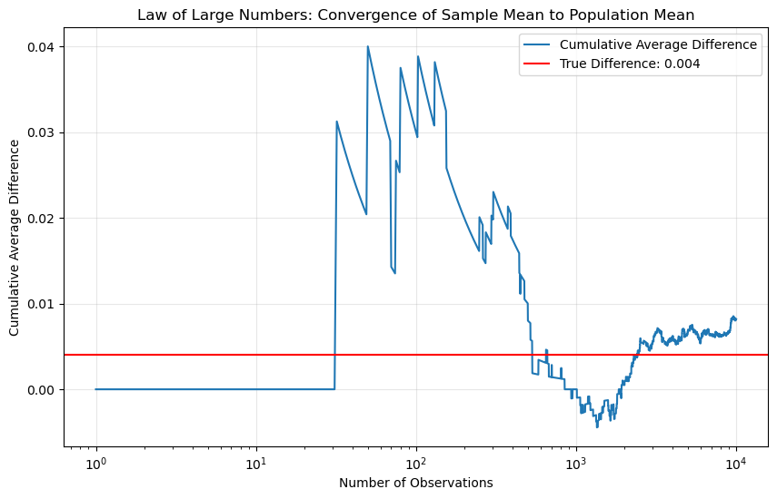
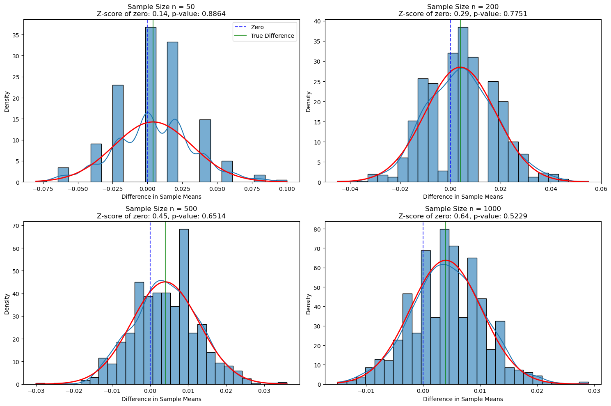

# Import necessary librariesimport pandas as pdimport numpy as npimport matplotlib.pyplot as pltimport seaborn as snsfrom scipy import statsimport statsmodels.api as smimport statsmodels.formula.api as smf# Read the data filedata = pd.read_stata("Data.dta")# Display basic information about the datasetprint(f"Number of observations: {data.shape[0]}")print(f"Number of variables: {data.shape[1]}")# Create summary statistics table for key variablesprint("Summary statistics for key variables:")summary_vars = ['treatment', 'control', 'gave', 'amount', 'hpa', 'freq', 'years', 'mrm2', 'dormant', 'female', 'couple']print(data[summary_vars].describe())# Count by treatment grouptreatment_count = data['treatment'].sum()control_count = data['control'].sum()print(f"\nTreatment group size: {treatment_count} ({treatment_count/len(data)*100:.1f}%)")print(f"Control group size: {control_count} ({control_count/len(data)*100:.1f}%)")# Break down the match ratiosratio_counts = data[data['treatment']==1].groupby(['ratio']).size()print("\nMatch ratio distribution:")print(ratio_counts)# Break down match threshold sizessize_counts = data[data['treatment']==1].groupby(['size']).size()print("\nMatch threshold distribution:")print(size_counts)# Create Table 1-style summary to verify randomizationprint("\nSummary statistics by treatment group:")table1_vars = ['mrm2', 'hpa', 'freq', 'years', 'dormant', 'female', 'couple', 'pwhite', 'pblack', 'page18_39', 'ave_hh_sz']table1 = data.groupby(['treatment'])[table1_vars].mean()print(table1)
Number of observations: 50083
Number of variables: 51
Summary statistics for key variables:
treatment control gave amount hpa \
count 50083.000000 50083.000000 50083.000000 50083.000000 50083.000000
mean 0.666813 0.333187 0.020646 0.915694 59.384975
std 0.471357 0.471357 0.142197 8.707393 71.179871
min 0.000000 0.000000 0.000000 0.000000 0.000000
25% 0.000000 0.000000 0.000000 0.000000 30.000000
50% 1.000000 0.000000 0.000000 0.000000 45.000000
75% 1.000000 1.000000 0.000000 0.000000 60.000000
max 1.000000 1.000000 1.000000 400.000000 1000.000000
freq years mrm2 dormant female \
count 50083.000000 50082.000000 50082.000000 50083.000000 48972.000000
mean 8.039355 6.097540 13.007268 0.523471 0.277669
std 11.394454 5.503492 12.081403 0.499454 0.447854
min 0.000000 0.000000 0.000000 0.000000 0.000000
25% 2.000000 2.000000 4.000000 0.000000 0.000000
50% 4.000000 5.000000 8.000000 1.000000 0.000000
75% 10.000000 9.000000 19.000000 1.000000 1.000000
max 218.000000 95.000000 168.000000 1.000000 1.000000
couple
count 48935.000000
mean 0.091897
std 0.288884
min 0.000000
25% 0.000000
50% 0.000000
75% 0.000000
max 1.000000
Treatment group size: 33396 (66.7%)
Control group size: 16687 (33.3%)
Match ratio distribution:
ratio
Control 0
1 11133
2 11134
3 11129
dtype: int64
Match threshold distribution:
size
Control 0
$25,000 8350
$50,000 8345
$100,000 8350
Unstated 8351
dtype: int64
Summary statistics by treatment group:
mrm2 hpa freq years dormant female \
treatment
0 12.998142 58.960167 8.047342 6.135914 0.522922 0.282698
1 13.011828 59.597240 8.035364 6.078365 0.523745 0.275151
couple pwhite pblack page18_39 ave_hh_sz
treatment
0 0.092975 0.820208 0.086624 0.321777 2.427002
1 0.091358 0.819295 0.086753 0.321653 2.430015
/tmp/ipykernel_86215/859292995.py:29: FutureWarning: The default of observed=False is deprecated and will be changed to True in a future version of pandas. Pass observed=False to retain current behavior or observed=True to adopt the future default and silence this warning.
ratio_counts = data[data['treatment']==1].groupby(['ratio']).size()
/tmp/ipykernel_86215/859292995.py:34: FutureWarning: The default of observed=False is deprecated and will be changed to True in a future version of pandas. Pass observed=False to retain current behavior or observed=True to adopt the future default and silence this warning.
size_counts = data[data['treatment']==1].groupby(['size']).size()
Variable Definitions
Variable
Description
treatment
Treatment
control
Control
ratio
Match ratio
ratio2
2:1 match ratio
ratio3
3:1 match ratio
size
Match threshold
size25
$25,000 match threshold
size50
$50,000 match threshold
size100
$100,000 match threshold
sizeno
Unstated match threshold
ask
Suggested donation amount
askd1
Suggested donation was highest previous contribution
askd2
Suggested donation was 1.25 x highest previous contribution
askd3
Suggested donation was 1.50 x highest previous contribution
ask1
Highest previous contribution (for suggestion)
ask2
1.25 x highest previous contribution (for suggestion)
ask3
1.50 x highest previous contribution (for suggestion)
amount
Dollars given
gave
Gave anything
amountchange
Change in amount given
hpa
Highest previous contribution
ltmedmra
Small prior donor: last gift was less than median $35
freq
Number of prior donations
years
Number of years since initial donation
year5
At least 5 years since initial donation
mrm2
Number of months since last donation
dormant
Already donated in 2005
female
Female
couple
Couple
state50one
State tag: 1 for one observation of each of 50 states; 0 otherwise
nonlit
Nonlitigation
cases
Court cases from state in 2004-5 in which organization was involved
statecnt
Percent of sample from state
stateresponse
Proportion of sample from the state who gave
stateresponset
Proportion of treated sample from the state who gave
stateresponsec
Proportion of control sample from the state who gave
stateresponsetminc
stateresponset - stateresponsec
perbush
State vote share for Bush
close25
State vote share for Bush between 47.5% and 52.5%
red0
Red state
blue0
Blue state
redcty
Red county
bluecty
Blue county
pwhite
Proportion white within zip code
pblack
Proportion black within zip code
page18_39
Proportion age 18-39 within zip code
ave_hh_sz
Average household size within zip code
median_hhincome
Median household income within zip code
powner
Proportion house owner within zip code
psch_atlstba
Proportion who finished college within zip code
pop_propurban
Proportion of population urban within zip code
::::
Balance Tests
# Create a function to run balance tests for a given variabledef run_balance_test(data, variable_name):# Extract data for the two groups treat_data = data[data['treatment'] ==1][variable_name].dropna() control_data = data[data['control'] ==1][variable_name].dropna()# Calculate means mean_treat = treat_data.mean() mean_control = control_data.mean() diff = mean_treat - mean_controlprint(f"\n--- Testing {variable_name} ---")print(f"Mean for treatment group: {mean_treat:.3f}")print(f"Mean for control group: {mean_control:.3f}")print(f"Difference: {diff:.3f}")# Calculate sample sizes and variances n_treat =len(treat_data) n_control =len(control_data) var_treat = treat_data.var() var_control = control_data.var()# Manual t-test using the formula from class slides# t = (mean1 - mean2) / sqrt(var1/n1 + var2/n2) t_stat = diff / np.sqrt(var_treat/n_treat + var_control/n_control)# Calculate p-value (two-tailed test) p_value =2* (1- stats.t.cdf(abs(t_stat), df=min(n_treat, n_control)-1))print(f"\nT-test results:")print(f"t-statistic: {t_stat:.4f}")print(f"p-value: {p_value:.4f}")print(f"Statistically significant at 95% level: {p_value <0.05}")# Linear regression approach X = sm.add_constant(data['treatment']) model = sm.OLS(data[variable_name], X).fit()print("\nRegression results:")print(f"Coefficient on treatment: {model.params[1]:.4f}")print(f"t-statistic: {model.tvalues[1]:.4f}")print(f"p-value: {model.pvalues[1]:.4f}")print(f"Statistically significant at 95% level: {model.pvalues[1] <0.05}")# Verify that regression coefficient equals difference in meansprint(f"\nVerification:")print(f"Regression coefficient ({model.params[1]:.4f}) = difference in means ({diff:.4f})")print(f"Regression t-stat ({model.tvalues[1]:.4f}) = manual t-stat ({t_stat:.4f})")# Return results for summary tablereturn {'Variable': variable_name,'Treatment Mean': mean_treat,'Control Mean': mean_control, 'Difference': diff,'T-statistic': t_stat,'P-value': p_value,'Significant at 95%': p_value <0.05 }# List of variables to testvariables_to_test = ['mrm2', 'hpa', 'freq', 'years', 'dormant', 'female', 'couple']# Run balance tests for each variableresults = []for var in variables_to_test: results.append(run_balance_test(data, var))# Create a summary table of all resultsbalance_table = pd.DataFrame(results)print("\n--- Summary of Balance Tests ---")print(balance_table.to_string(index=False, float_format=lambda x: f"{x:.4f}"))# Check if any variables show significant differencessig_vars = balance_table[balance_table['Significant at 95%'] ==True]iflen(sig_vars) ==0:print("\nNone of the tested variables show statistically significant differences between treatment and control groups.")print("This suggests that the randomization was successful.")else:print(f"\n{len(sig_vars)} variables show statistically significant differences between groups:")print(sig_vars['Variable'].tolist())print("This may indicate potential issues with the randomization process.")
--- Testing mrm2 ---
Mean for treatment group: 13.012
Mean for control group: 12.998
Difference: 0.014
T-test results:
t-statistic: 0.1195
p-value: 0.9049
Statistically significant at 95% level: False
Regression results:
Coefficient on treatment: nan
t-statistic: nan
p-value: nan
Statistically significant at 95% level: False
Verification:
Regression coefficient (nan) = difference in means (0.0137)
Regression t-stat (nan) = manual t-stat (0.1195)
--- Testing hpa ---
Mean for treatment group: 59.597
Mean for control group: 58.960
Difference: 0.637
T-test results:
t-statistic: 0.9704
p-value: 0.3319
Statistically significant at 95% level: False
Regression results:
Coefficient on treatment: 0.6371
t-statistic: 0.9441
p-value: 0.3451
Statistically significant at 95% level: False
Verification:
Regression coefficient (0.6371) = difference in means (0.6371)
Regression t-stat (0.9441) = manual t-stat (0.9704)
--- Testing freq ---
Mean for treatment group: 8.035
Mean for control group: 8.047
Difference: -0.012
T-test results:
t-statistic: -0.1108
p-value: 0.9117
Statistically significant at 95% level: False
Regression results:
Coefficient on treatment: -0.0120
t-statistic: -0.1109
p-value: 0.9117
Statistically significant at 95% level: False
Verification:
Regression coefficient (-0.0120) = difference in means (-0.0120)
Regression t-stat (-0.1109) = manual t-stat (-0.1108)
--- Testing years ---
Mean for treatment group: 6.078
Mean for control group: 6.136
Difference: -0.058
T-test results:
t-statistic: -1.0909
p-value: 0.2753
Statistically significant at 95% level: False
Regression results:
Coefficient on treatment: nan
t-statistic: nan
p-value: nan
Statistically significant at 95% level: False
Verification:
Regression coefficient (nan) = difference in means (-0.0575)
Regression t-stat (nan) = manual t-stat (-1.0909)
--- Testing dormant ---
Mean for treatment group: 0.524
Mean for control group: 0.523
Difference: 0.001
T-test results:
t-statistic: 0.1739
p-value: 0.8620
Statistically significant at 95% level: False
Regression results:
Coefficient on treatment: 0.0008
t-statistic: 0.1739
p-value: 0.8620
Statistically significant at 95% level: False
Verification:
Regression coefficient (0.0008) = difference in means (0.0008)
Regression t-stat (0.1739) = manual t-stat (0.1739)
--- Testing female ---
Mean for treatment group: 0.275
Mean for control group: 0.283
Difference: -0.008
T-test results:
t-statistic: -1.7535
p-value: 0.0795
Statistically significant at 95% level: False
Regression results:
Coefficient on treatment: nan
t-statistic: nan
p-value: nan
Statistically significant at 95% level: False
Verification:
Regression coefficient (nan) = difference in means (-0.0075)
Regression t-stat (nan) = manual t-stat (-1.7535)
--- Testing couple ---
Mean for treatment group: 0.091
Mean for control group: 0.093
Difference: -0.002
T-test results:
t-statistic: -0.5823
p-value: 0.5604
Statistically significant at 95% level: False
Regression results:
Coefficient on treatment: nan
t-statistic: nan
p-value: nan
Statistically significant at 95% level: False
Verification:
Regression coefficient (nan) = difference in means (-0.0016)
Regression t-stat (nan) = manual t-stat (-0.5823)
--- Summary of Balance Tests ---
Variable Treatment Mean Control Mean Difference T-statistic P-value Significant at 95%
mrm2 13.0118 12.9981 0.0137 0.1195 0.9049 False
hpa 59.5972 58.9602 0.6371 0.9704 0.3319 False
freq 8.0354 8.0473 -0.0120 -0.1108 0.9117 False
years 6.0784 6.1359 -0.0575 -1.0909 0.2753 False
dormant 0.5237 0.5229 0.0008 0.1739 0.8620 False
female 0.2752 0.2827 -0.0075 -1.7535 0.0795 False
couple 0.0914 0.0930 -0.0016 -0.5823 0.5604 False
None of the tested variables show statistically significant differences between treatment and control groups.
This suggests that the randomization was successful.
/tmp/ipykernel_86215/3282780960.py:40: FutureWarning: Series.__getitem__ treating keys as positions is deprecated. In a future version, integer keys will always be treated as labels (consistent with DataFrame behavior). To access a value by position, use `ser.iloc[pos]`
print(f"Coefficient on treatment: {model.params[1]:.4f}")
/tmp/ipykernel_86215/3282780960.py:41: FutureWarning: Series.__getitem__ treating keys as positions is deprecated. In a future version, integer keys will always be treated as labels (consistent with DataFrame behavior). To access a value by position, use `ser.iloc[pos]`
print(f"t-statistic: {model.tvalues[1]:.4f}")
/tmp/ipykernel_86215/3282780960.py:42: FutureWarning: Series.__getitem__ treating keys as positions is deprecated. In a future version, integer keys will always be treated as labels (consistent with DataFrame behavior). To access a value by position, use `ser.iloc[pos]`
print(f"p-value: {model.pvalues[1]:.4f}")
/tmp/ipykernel_86215/3282780960.py:43: FutureWarning: Series.__getitem__ treating keys as positions is deprecated. In a future version, integer keys will always be treated as labels (consistent with DataFrame behavior). To access a value by position, use `ser.iloc[pos]`
print(f"Statistically significant at 95% level: {model.pvalues[1] < 0.05}")
/tmp/ipykernel_86215/3282780960.py:47: FutureWarning: Series.__getitem__ treating keys as positions is deprecated. In a future version, integer keys will always be treated as labels (consistent with DataFrame behavior). To access a value by position, use `ser.iloc[pos]`
print(f"Regression coefficient ({model.params[1]:.4f}) = difference in means ({diff:.4f})")
/tmp/ipykernel_86215/3282780960.py:48: FutureWarning: Series.__getitem__ treating keys as positions is deprecated. In a future version, integer keys will always be treated as labels (consistent with DataFrame behavior). To access a value by position, use `ser.iloc[pos]`
print(f"Regression t-stat ({model.tvalues[1]:.4f}) = manual t-stat ({t_stat:.4f})")
/tmp/ipykernel_86215/3282780960.py:40: FutureWarning: Series.__getitem__ treating keys as positions is deprecated. In a future version, integer keys will always be treated as labels (consistent with DataFrame behavior). To access a value by position, use `ser.iloc[pos]`
print(f"Coefficient on treatment: {model.params[1]:.4f}")
/tmp/ipykernel_86215/3282780960.py:41: FutureWarning: Series.__getitem__ treating keys as positions is deprecated. In a future version, integer keys will always be treated as labels (consistent with DataFrame behavior). To access a value by position, use `ser.iloc[pos]`
print(f"t-statistic: {model.tvalues[1]:.4f}")
/tmp/ipykernel_86215/3282780960.py:42: FutureWarning: Series.__getitem__ treating keys as positions is deprecated. In a future version, integer keys will always be treated as labels (consistent with DataFrame behavior). To access a value by position, use `ser.iloc[pos]`
print(f"p-value: {model.pvalues[1]:.4f}")
/tmp/ipykernel_86215/3282780960.py:43: FutureWarning: Series.__getitem__ treating keys as positions is deprecated. In a future version, integer keys will always be treated as labels (consistent with DataFrame behavior). To access a value by position, use `ser.iloc[pos]`
print(f"Statistically significant at 95% level: {model.pvalues[1] < 0.05}")
/tmp/ipykernel_86215/3282780960.py:47: FutureWarning: Series.__getitem__ treating keys as positions is deprecated. In a future version, integer keys will always be treated as labels (consistent with DataFrame behavior). To access a value by position, use `ser.iloc[pos]`
print(f"Regression coefficient ({model.params[1]:.4f}) = difference in means ({diff:.4f})")
/tmp/ipykernel_86215/3282780960.py:48: FutureWarning: Series.__getitem__ treating keys as positions is deprecated. In a future version, integer keys will always be treated as labels (consistent with DataFrame behavior). To access a value by position, use `ser.iloc[pos]`
print(f"Regression t-stat ({model.tvalues[1]:.4f}) = manual t-stat ({t_stat:.4f})")
/tmp/ipykernel_86215/3282780960.py:40: FutureWarning: Series.__getitem__ treating keys as positions is deprecated. In a future version, integer keys will always be treated as labels (consistent with DataFrame behavior). To access a value by position, use `ser.iloc[pos]`
print(f"Coefficient on treatment: {model.params[1]:.4f}")
/tmp/ipykernel_86215/3282780960.py:41: FutureWarning: Series.__getitem__ treating keys as positions is deprecated. In a future version, integer keys will always be treated as labels (consistent with DataFrame behavior). To access a value by position, use `ser.iloc[pos]`
print(f"t-statistic: {model.tvalues[1]:.4f}")
/tmp/ipykernel_86215/3282780960.py:42: FutureWarning: Series.__getitem__ treating keys as positions is deprecated. In a future version, integer keys will always be treated as labels (consistent with DataFrame behavior). To access a value by position, use `ser.iloc[pos]`
print(f"p-value: {model.pvalues[1]:.4f}")
/tmp/ipykernel_86215/3282780960.py:43: FutureWarning: Series.__getitem__ treating keys as positions is deprecated. In a future version, integer keys will always be treated as labels (consistent with DataFrame behavior). To access a value by position, use `ser.iloc[pos]`
print(f"Statistically significant at 95% level: {model.pvalues[1] < 0.05}")
/tmp/ipykernel_86215/3282780960.py:47: FutureWarning: Series.__getitem__ treating keys as positions is deprecated. In a future version, integer keys will always be treated as labels (consistent with DataFrame behavior). To access a value by position, use `ser.iloc[pos]`
print(f"Regression coefficient ({model.params[1]:.4f}) = difference in means ({diff:.4f})")
/tmp/ipykernel_86215/3282780960.py:48: FutureWarning: Series.__getitem__ treating keys as positions is deprecated. In a future version, integer keys will always be treated as labels (consistent with DataFrame behavior). To access a value by position, use `ser.iloc[pos]`
print(f"Regression t-stat ({model.tvalues[1]:.4f}) = manual t-stat ({t_stat:.4f})")
/tmp/ipykernel_86215/3282780960.py:40: FutureWarning: Series.__getitem__ treating keys as positions is deprecated. In a future version, integer keys will always be treated as labels (consistent with DataFrame behavior). To access a value by position, use `ser.iloc[pos]`
print(f"Coefficient on treatment: {model.params[1]:.4f}")
/tmp/ipykernel_86215/3282780960.py:41: FutureWarning: Series.__getitem__ treating keys as positions is deprecated. In a future version, integer keys will always be treated as labels (consistent with DataFrame behavior). To access a value by position, use `ser.iloc[pos]`
print(f"t-statistic: {model.tvalues[1]:.4f}")
/tmp/ipykernel_86215/3282780960.py:42: FutureWarning: Series.__getitem__ treating keys as positions is deprecated. In a future version, integer keys will always be treated as labels (consistent with DataFrame behavior). To access a value by position, use `ser.iloc[pos]`
print(f"p-value: {model.pvalues[1]:.4f}")
/tmp/ipykernel_86215/3282780960.py:43: FutureWarning: Series.__getitem__ treating keys as positions is deprecated. In a future version, integer keys will always be treated as labels (consistent with DataFrame behavior). To access a value by position, use `ser.iloc[pos]`
print(f"Statistically significant at 95% level: {model.pvalues[1] < 0.05}")
/tmp/ipykernel_86215/3282780960.py:47: FutureWarning: Series.__getitem__ treating keys as positions is deprecated. In a future version, integer keys will always be treated as labels (consistent with DataFrame behavior). To access a value by position, use `ser.iloc[pos]`
print(f"Regression coefficient ({model.params[1]:.4f}) = difference in means ({diff:.4f})")
/tmp/ipykernel_86215/3282780960.py:48: FutureWarning: Series.__getitem__ treating keys as positions is deprecated. In a future version, integer keys will always be treated as labels (consistent with DataFrame behavior). To access a value by position, use `ser.iloc[pos]`
print(f"Regression t-stat ({model.tvalues[1]:.4f}) = manual t-stat ({t_stat:.4f})")
/tmp/ipykernel_86215/3282780960.py:40: FutureWarning: Series.__getitem__ treating keys as positions is deprecated. In a future version, integer keys will always be treated as labels (consistent with DataFrame behavior). To access a value by position, use `ser.iloc[pos]`
print(f"Coefficient on treatment: {model.params[1]:.4f}")
/tmp/ipykernel_86215/3282780960.py:41: FutureWarning: Series.__getitem__ treating keys as positions is deprecated. In a future version, integer keys will always be treated as labels (consistent with DataFrame behavior). To access a value by position, use `ser.iloc[pos]`
print(f"t-statistic: {model.tvalues[1]:.4f}")
/tmp/ipykernel_86215/3282780960.py:42: FutureWarning: Series.__getitem__ treating keys as positions is deprecated. In a future version, integer keys will always be treated as labels (consistent with DataFrame behavior). To access a value by position, use `ser.iloc[pos]`
print(f"p-value: {model.pvalues[1]:.4f}")
/tmp/ipykernel_86215/3282780960.py:43: FutureWarning: Series.__getitem__ treating keys as positions is deprecated. In a future version, integer keys will always be treated as labels (consistent with DataFrame behavior). To access a value by position, use `ser.iloc[pos]`
print(f"Statistically significant at 95% level: {model.pvalues[1] < 0.05}")
/tmp/ipykernel_86215/3282780960.py:47: FutureWarning: Series.__getitem__ treating keys as positions is deprecated. In a future version, integer keys will always be treated as labels (consistent with DataFrame behavior). To access a value by position, use `ser.iloc[pos]`
print(f"Regression coefficient ({model.params[1]:.4f}) = difference in means ({diff:.4f})")
/tmp/ipykernel_86215/3282780960.py:48: FutureWarning: Series.__getitem__ treating keys as positions is deprecated. In a future version, integer keys will always be treated as labels (consistent with DataFrame behavior). To access a value by position, use `ser.iloc[pos]`
print(f"Regression t-stat ({model.tvalues[1]:.4f}) = manual t-stat ({t_stat:.4f})")
/tmp/ipykernel_86215/3282780960.py:40: FutureWarning: Series.__getitem__ treating keys as positions is deprecated. In a future version, integer keys will always be treated as labels (consistent with DataFrame behavior). To access a value by position, use `ser.iloc[pos]`
print(f"Coefficient on treatment: {model.params[1]:.4f}")
/tmp/ipykernel_86215/3282780960.py:41: FutureWarning: Series.__getitem__ treating keys as positions is deprecated. In a future version, integer keys will always be treated as labels (consistent with DataFrame behavior). To access a value by position, use `ser.iloc[pos]`
print(f"t-statistic: {model.tvalues[1]:.4f}")
/tmp/ipykernel_86215/3282780960.py:42: FutureWarning: Series.__getitem__ treating keys as positions is deprecated. In a future version, integer keys will always be treated as labels (consistent with DataFrame behavior). To access a value by position, use `ser.iloc[pos]`
print(f"p-value: {model.pvalues[1]:.4f}")
/tmp/ipykernel_86215/3282780960.py:43: FutureWarning: Series.__getitem__ treating keys as positions is deprecated. In a future version, integer keys will always be treated as labels (consistent with DataFrame behavior). To access a value by position, use `ser.iloc[pos]`
print(f"Statistically significant at 95% level: {model.pvalues[1] < 0.05}")
/tmp/ipykernel_86215/3282780960.py:47: FutureWarning: Series.__getitem__ treating keys as positions is deprecated. In a future version, integer keys will always be treated as labels (consistent with DataFrame behavior). To access a value by position, use `ser.iloc[pos]`
print(f"Regression coefficient ({model.params[1]:.4f}) = difference in means ({diff:.4f})")
/tmp/ipykernel_86215/3282780960.py:48: FutureWarning: Series.__getitem__ treating keys as positions is deprecated. In a future version, integer keys will always be treated as labels (consistent with DataFrame behavior). To access a value by position, use `ser.iloc[pos]`
print(f"Regression t-stat ({model.tvalues[1]:.4f}) = manual t-stat ({t_stat:.4f})")
/tmp/ipykernel_86215/3282780960.py:40: FutureWarning: Series.__getitem__ treating keys as positions is deprecated. In a future version, integer keys will always be treated as labels (consistent with DataFrame behavior). To access a value by position, use `ser.iloc[pos]`
print(f"Coefficient on treatment: {model.params[1]:.4f}")
/tmp/ipykernel_86215/3282780960.py:41: FutureWarning: Series.__getitem__ treating keys as positions is deprecated. In a future version, integer keys will always be treated as labels (consistent with DataFrame behavior). To access a value by position, use `ser.iloc[pos]`
print(f"t-statistic: {model.tvalues[1]:.4f}")
/tmp/ipykernel_86215/3282780960.py:42: FutureWarning: Series.__getitem__ treating keys as positions is deprecated. In a future version, integer keys will always be treated as labels (consistent with DataFrame behavior). To access a value by position, use `ser.iloc[pos]`
print(f"p-value: {model.pvalues[1]:.4f}")
/tmp/ipykernel_86215/3282780960.py:43: FutureWarning: Series.__getitem__ treating keys as positions is deprecated. In a future version, integer keys will always be treated as labels (consistent with DataFrame behavior). To access a value by position, use `ser.iloc[pos]`
print(f"Statistically significant at 95% level: {model.pvalues[1] < 0.05}")
/tmp/ipykernel_86215/3282780960.py:47: FutureWarning: Series.__getitem__ treating keys as positions is deprecated. In a future version, integer keys will always be treated as labels (consistent with DataFrame behavior). To access a value by position, use `ser.iloc[pos]`
print(f"Regression coefficient ({model.params[1]:.4f}) = difference in means ({diff:.4f})")
/tmp/ipykernel_86215/3282780960.py:48: FutureWarning: Series.__getitem__ treating keys as positions is deprecated. In a future version, integer keys will always be treated as labels (consistent with DataFrame behavior). To access a value by position, use `ser.iloc[pos]`
print(f"Regression t-stat ({model.tvalues[1]:.4f}) = manual t-stat ({t_stat:.4f})")
Experimental Results
# Calculate proportion who donated in each groupgave_by_treatment = data.groupby('treatment')['gave'].mean()control_gave_rate = gave_by_treatment[0]treatment_gave_rate = gave_by_treatment[1]# Create barplotplt.figure(figsize=(8, 5))bars = plt.bar(['Control', 'Treatment'], [control_gave_rate, treatment_gave_rate])plt.ylabel('Proportion who donated')plt.title('Donation Rate by Treatment Group')plt.ylim(0, max(control_gave_rate, treatment_gave_rate) *1.2)# Add text labels on barsfor bar in bars: height = bar.get_height() plt.text(bar.get_x() + bar.get_width()/2., height +0.001,f'{height:.3f}', ha='center', va='bottom')plt.savefig('donation_rate.png')plt.show()# Run t-test on binary outcome of gavegave_treat = data[data['treatment'] ==1]['gave']gave_control = data[data['control'] ==1]['gave']# Calculate means, sample sizes, and variancesmean_treat = gave_treat.mean()mean_control = gave_control.mean()diff = mean_treat - mean_controln_treat =len(gave_treat)n_control =len(gave_control)var_treat = gave_treat.var()var_control = gave_control.var()# Calculate t-statistic and p-valuet_stat = diff / np.sqrt(var_treat/n_treat + var_control/n_control)p_value =2* (1- stats.t.cdf(abs(t_stat), df=min(n_treat, n_control)-1))print("T-test results for donation rate:")print(f"Treatment mean: {mean_treat:.4f}")print(f"Control mean: {mean_control:.4f}")print(f"Difference: {diff:.4f}")print(f"t-statistic: {t_stat:.4f}")print(f"p-value: {p_value:.4f}")# Run bivariate linear regressionmodel_gave = sm.OLS(data['gave'], sm.add_constant(data['treatment'])).fit()print("\nLinear regression results for donation rate:")print(model_gave.summary().tables[1])# Run probit regressionprobit_model = sm.Probit(data['gave'], sm.add_constant(data['treatment'])).fit()print("\nProbit regression results for donation rate:")print(probit_model.summary().tables[1])# Calculate marginal effect at the mean for comparison with Table 3try: marginal_effect = probit_model.get_margeff()print("\nMarginal effect at mean:")print(marginal_effect.summary_frame(alpha=0.05)['dy/dx']['treatment'])except:# Option 2: Calculate manuallyfrom scipy.stats import norm# Get the coefficients beta = probit_model.params# Calculate Xβ X = sm.add_constant(data['treatment']) xb = X.dot(beta)# Calculate the PDF at the mean of Xβ pdf_mean = norm.pdf(xb.mean())# Marginal effect is PDF × coefficient me_treatment = pdf_mean * beta['treatment']print("\nManually calculated marginal effect at mean:")print(f"Treatment: {me_treatment:.4f}")

T-test results for donation rate:
Treatment mean: 0.0220
Control mean: 0.0179
Difference: 0.0042
t-statistic: 3.2095
p-value: 0.0013
Linear regression results for donation rate:
==============================================================================
coef std err t P>|t| [0.025 0.975]
------------------------------------------------------------------------------
const 0.0179 0.001 16.225 0.000 0.016 0.020
treatment 0.0042 0.001 3.101 0.002 0.002 0.007
==============================================================================
Optimization terminated successfully.
Current function value: 0.100443
Iterations 7
Probit regression results for donation rate:
==============================================================================
coef std err z P>|z| [0.025 0.975]
------------------------------------------------------------------------------
const -2.1001 0.023 -90.073 0.000 -2.146 -2.054
treatment 0.0868 0.028 3.113 0.002 0.032 0.141
==============================================================================
Marginal effect at mean:
0.0043132115796334115
# Create binary indicators for match ratiosdata['ratio1'] = ((data['treatment'] ==1) & (data['ratio'] ==1)).astype(int)data['ratio2'] = ((data['treatment'] ==1) & (data['ratio'] ==2)).astype(int)data['ratio3'] = ((data['treatment'] ==1) & (data['ratio'] ==3)).astype(int)# Calculate response rates by match ratiogave_by_ratio = {'control': data[data['control'] ==1]['gave'].mean(),'1:1': data[data['ratio1'] ==1]['gave'].mean(),'2:1': data[data['ratio2'] ==1]['gave'].mean(),'3:1': data[data['ratio3'] ==1]['gave'].mean()}print("\nDonation rate by match ratio:")for group, rate in gave_by_ratio.items():print(f"{group}: {rate:.4f}")# Run t-tests between different match ratiosprint("\nT-tests comparing match ratios:")# 1:1 vs 2:1ratio1_gave = data[data['ratio1'] ==1]['gave']ratio2_gave = data[data['ratio2'] ==1]['gave']t_stat_1v2, p_val_1v2 = stats.ttest_ind(ratio1_gave, ratio2_gave, equal_var=False)print(f"1:1 vs 2:1: t-stat = {t_stat_1v2:.4f}, p-value = {p_val_1v2:.4f}")# 2:1 vs 3:1ratio3_gave = data[data['ratio3'] ==1]['gave']t_stat_2v3, p_val_2v3 = stats.ttest_ind(ratio2_gave, ratio3_gave, equal_var=False)print(f"2:1 vs 3:1: t-stat = {t_stat_2v3:.4f}, p-value = {p_val_2v3:.4f}")# 1:1 vs 3:1t_stat_1v3, p_val_1v3 = stats.ttest_ind(ratio1_gave, ratio3_gave, equal_var=False)print(f"1:1 vs 3:1: t-stat = {t_stat_1v3:.4f}, p-value = {p_val_1v3:.4f}")# Run regression of gave on ratio dummiesX_ratio = sm.add_constant(data[['ratio1', 'ratio2', 'ratio3']])model_ratio = sm.OLS(data['gave'], X_ratio).fit()print("\nRegression results for match ratio effects:")print(model_ratio.summary().tables[1])# Calculate response rate differences directly from datadiff_1v2 = gave_by_ratio['2:1'] - gave_by_ratio['1:1']diff_2v3 = gave_by_ratio['3:1'] - gave_by_ratio['2:1']print("\nResponse rate differences from raw data:")print(f"Difference between 1:1 and 2:1: {diff_1v2:.4f}")print(f"Difference between 2:1 and 3:1: {diff_2v3:.4f}")# Calculate differences from regression coefficientsdiff_1v2_coef = model_ratio.params['ratio2'] - model_ratio.params['ratio1']diff_2v3_coef = model_ratio.params['ratio3'] - model_ratio.params['ratio2']print("\nResponse rate differences from regression coefficients:")print(f"Difference between 1:1 and 2:1: {diff_1v2_coef:.4f}")print(f"Difference between 2:1 and 3:1: {diff_2v3_coef:.4f}")
Donation rate by match ratio:
control: 0.0179
1:1: 0.0207
2:1: 0.0226
3:1: 0.0227
T-tests comparing match ratios:
1:1 vs 2:1: t-stat = -0.9650, p-value = 0.3345
2:1 vs 3:1: t-stat = -0.0501, p-value = 0.9600
1:1 vs 3:1: t-stat = -1.0150, p-value = 0.3101
Regression results for match ratio effects:
==============================================================================
coef std err t P>|t| [0.025 0.975]
------------------------------------------------------------------------------
const 0.0179 0.001 16.225 0.000 0.016 0.020
ratio1 0.0029 0.002 1.661 0.097 -0.001 0.006
ratio2 0.0048 0.002 2.744 0.006 0.001 0.008
ratio3 0.0049 0.002 2.802 0.005 0.001 0.008
==============================================================================
Response rate differences from raw data:
Difference between 1:1 and 2:1: 0.0019
Difference between 2:1 and 3:1: 0.0001
Response rate differences from regression coefficients:
Difference between 1:1 and 2:1: 0.0019
Difference between 2:1 and 3:1: 0.0001
# Run a t-test on donation amount by treatment statusamount_treat = data[data['treatment'] ==1]['amount']amount_control = data[data['control'] ==1]['amount']# Calculate means and run t-testmean_amount_treat = amount_treat.mean()mean_amount_control = amount_control.mean()diff_amount = mean_amount_treat - mean_amount_control# Calculate t-statistic and p-valuet_stat_amount = diff_amount / np.sqrt(amount_treat.var()/len(amount_treat) + amount_control.var()/len(amount_control))p_value_amount =2* (1- stats.t.cdf(abs(t_stat_amount), df=min(len(amount_treat), len(amount_control))-1))print("\nT-test results for donation amount:")print(f"Treatment mean: ${mean_amount_treat:.2f}")print(f"Control mean: ${mean_amount_control:.2f}")print(f"Difference: ${diff_amount:.2f}")print(f"t-statistic: {t_stat_amount:.4f}")print(f"p-value: {p_value_amount:.4f}")# Run bivariate regression of amount on treatmentmodel_amount = sm.OLS(data['amount'], sm.add_constant(data['treatment'])).fit()print("\nRegression results for donation amount:")print(model_amount.summary().tables[1])# Analysis conditional on positive donation# Filter to only include donors who gavedonors_only = data[data['gave'] ==1]# Calculate conditional meanscond_mean_treat = donors_only[donors_only['treatment'] ==1]['amount'].mean()cond_mean_control = donors_only[donors_only['control'] ==1]['amount'].mean()cond_diff = cond_mean_treat - cond_mean_control# Run t-test on conditional donation amountscond_amount_treat = donors_only[donors_only['treatment'] ==1]['amount']cond_amount_control = donors_only[donors_only['control'] ==1]['amount']t_stat_cond, p_val_cond = stats.ttest_ind(cond_amount_treat, cond_amount_control, equal_var=False)print("\nConditional on positive donation:")print(f"Treatment mean: ${cond_mean_treat:.2f}")print(f"Control mean: ${cond_mean_control:.2f}")print(f"Difference: ${cond_diff:.2f}")print(f"t-statistic: {t_stat_cond:.4f}")print(f"p-value: {p_val_cond:.4f}")# Run regression on conditional amountsmodel_cond = sm.OLS(donors_only['amount'], sm.add_constant(donors_only['treatment'])).fit()print("\nRegression results for conditional donation amount:")print(model_cond.summary().tables[1])# Create histograms of donation amounts by group (among donors)plt.figure(figsize=(12, 5))# Treatment groupplt.subplot(1, 2, 1)plt.hist(cond_amount_treat, bins=20, alpha=0.7)plt.axvline(x=cond_mean_treat, color='r', linestyle='dashed', linewidth=1)plt.text(cond_mean_treat*1.1, plt.ylim()[1]*0.9, f'Mean: ${cond_mean_treat:.2f}', color='r')plt.title('Treatment Group Donation Amounts')plt.xlabel('Donation Amount ($)')plt.ylabel('Frequency')# Control groupplt.subplot(1, 2, 2)plt.hist(cond_amount_control, bins=20, alpha=0.7)plt.axvline(x=cond_mean_control, color='r', linestyle='dashed', linewidth=1)plt.text(cond_mean_control*1.1, plt.ylim()[1]*0.9, f'Mean: ${cond_mean_control:.2f}', color='r')plt.title('Control Group Donation Amounts')plt.xlabel('Donation Amount ($)')plt.ylabel('Frequency')plt.tight_layout()plt.savefig('donation_amounts.png')plt.show()
np.random.seed(42)# Define true probabilitiesp_control =0.018p_treatment =0.022true_diff = p_treatment - p_control# Simulate 10,000 draws from each distributionn_draws =10000control_draws = np.random.binomial(1, p_control, n_draws)treatment_draws = np.random.binomial(1, p_treatment, n_draws)# Calculate differencesdifferences = treatment_draws - control_draws# Calculate cumulative averagecumulative_avg = np.cumsum(differences) / np.arange(1, n_draws +1)# Plot the cumulative averageplt.figure(figsize=(10, 6))plt.plot(range(1, n_draws +1), cumulative_avg, label='Cumulative Average Difference')plt.axhline(y=true_diff, color='r', linestyle='-', label=f'True Difference: {true_diff}')plt.xscale('log') # Log scale to better show convergenceplt.xlabel('Number of Observations')plt.ylabel('Cumulative Average Difference')plt.title('Law of Large Numbers: Convergence of Sample Mean to Population Mean')plt.legend()plt.grid(True, alpha=0.3)plt.savefig('law_of_large_numbers.png')plt.show()# Print final cumulative averageprint(f"Final cumulative average after {n_draws} draws: {cumulative_avg[-1]:.6f}")print(f"True difference: {true_diff}")print(f"Absolute error: {abs(cumulative_avg[-1] - true_diff):.6f}")

Final cumulative average after 10000 draws: 0.008200
True difference: 0.004
Absolute error: 0.004200
# Sample sizes to demonstrate CLTsample_sizes = [50, 200, 500, 1000]n_simulations =1000# Create a figure for all histogramsplt.figure(figsize=(15, 10))# For each sample sizefor i, n inenumerate(sample_sizes):# Storage for sample means sample_diffs = np.zeros(n_simulations)# Perform many simulationsfor j inrange(n_simulations):# Draw samples from control and treatment control_sample = np.random.binomial(1, p_control, n) treatment_sample = np.random.binomial(1, p_treatment, n)# Calculate and store the difference in means control_mean = np.mean(control_sample) treatment_mean = np.mean(treatment_sample) sample_diffs[j] = treatment_mean - control_mean# Calculate theoretical parameters for normal approximation mean_diff = p_treatment - p_control se_diff = np.sqrt((p_treatment * (1- p_treatment) + p_control * (1- p_control)) / n)# Create histogram subplot plt.subplot(2, 2, i +1) sns.histplot(sample_diffs, kde=True, stat='density', alpha=0.6)# Add normal curve x = np.linspace(min(sample_diffs), max(sample_diffs), 1000) plt.plot(x, stats.norm.pdf(x, mean_diff, se_diff), 'r-', linewidth=2)# Add vertical lines for zero and true difference plt.axvline(x=0, color='blue', linestyle='--', alpha=0.7, label='Zero') plt.axvline(x=mean_diff, color='green', linestyle='-', alpha=0.7, label='True Difference')# Calculate how many standard deviations zero is from the mean z_score =abs(mean_diff) / se_diff p_value =2* (1- stats.norm.cdf(z_score)) # Two-tailed p-value# Add plot details plt.title(f'Sample Size n = {n}\nZ-score of zero: {z_score:.2f}, p-value: {p_value:.4f}') plt.xlabel('Difference in Sample Means') plt.ylabel('Density')if i ==0: # Only add legend to first plot plt.legend()plt.tight_layout()plt.savefig('central_limit_theorem.png')plt.show()# Calculate proportion of simulations where difference is less than or equal to zerofor n in sample_sizes: control_means = np.array([np.mean(np.random.binomial(1, p_control, n)) for _ inrange(n_simulations)]) treatment_means = np.array([np.mean(np.random.binomial(1, p_treatment, n)) for _ inrange(n_simulations)]) diffs = treatment_means - control_means prop_below_zero = np.mean(diffs <=0)print(f"Sample size {n}: Proportion of simulations with difference <= 0: {prop_below_zero:.4f}")

Sample size 50: Proportion of simulations with difference <= 0: 0.5980
Sample size 200: Proportion of simulations with difference <= 0: 0.4560
Sample size 500: Proportion of simulations with difference <= 0: 0.3530
Sample size 1000: Proportion of simulations with difference <= 0: 0.3020